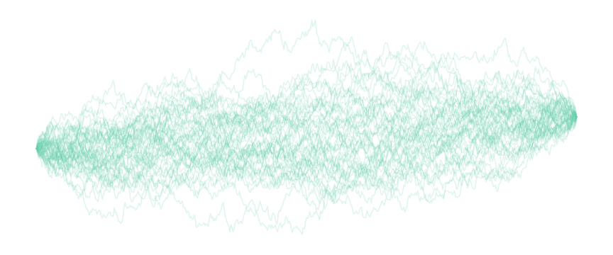

Joint work by Marcin Mider$^*$, Paul Jenkins$^*$, Murray Pollock$^*$, Gareth Roberts$^*$ and Michael Sørensen$^{\Box}$
$^*$Univeristy of Warwick, Coventry, UK
$^{\Box}$University of Copenhagen, Copenhagen, Denmark
$X_t$ - stochastic process solving SDE:
$$dX_t=b(X_t)dt+\sigma(X_t)dW_t,\quad X_0=x_0,\quad t\in[0,T].$$
Heuristically: $X_{t+\Delta}-X_{t}\approx\mathcal{N}(b(X_t)\Delta,\sigma^2(X_t)\Delta)$.
Additionally condition on $X_T=x_T$
Model of the form:
$dX_t=b_{\theta}(X_t)dt+\sigma_{\theta}(X_t)dW_t,$
$\qquad\qquad t\in[0,T]$
Available discrete time observations $\mathcal{D}:=\{X_{t_i}\}_{i=0}^{N}$
Interested in inference for $\theta$
Unbiased combination of results from several MCMC chains run in a distributed computing environment
Technique for sampling diffusion bridges
Needs to scale to bridges with distant end-points (large $T$)
Needs to be unbiased
Allow for dependent samples (MCMC for paths)
Use an existing sampler - Simple Diffusion Bridges (Bladt and Sørensen [2014])
Substitute all steps introducing discretisation error with exact protocols
Output: MCMC sampler for diffusion bridges, with invariant measure of a target diffusion bridge and no discretisation error!
$dX^{(1)}_t=\alpha_{\theta}(X^{(1)}_t)dt+dW_t$, $X_0^{(1)}=x_0$ $\quad dX^{(2)}_t=\alpha_{\theta}(X^{(2)}_t)dt+dW_t$, $X_0^{(2)}=x_T$
Proposals $\sim\unicode{x211A}$
Accept with probability: $$\frac{\frac{d\unicode{x2119}}{d\unicode{x211A}}(X^{(prop)})}{\frac{d\unicode{x2119}}{d\unicode{x211A}}(X^{(old)})}\wedge 1=\frac{1/\pi(X^{(prop)})}{1/\pi(X^{(old)})}\wedge 1$$
Where $\pi(X)$ - probability that $X$ is intersected by an auxiliary diffusion
Pseudo-marginal (Andrieu and Roberts [2009])
$\unicode{x1D59F}^{(prop)}$ - unbiased estimate for $1/\pi(X^{(prop)})$
Sample $(X^{(prop)},\unicode{x1D59F}^{(prop)})$ and accept with probability $\unicode{x1D59F}^{(prop)}/\unicode{x1D59F}^{(old)}\wedge 1$
Consider sequence of coin tosses: $U_i$, $i\in\unicode{x2115}_+$, $\unicode{x2119}(U_i=1)=\pi(X^{(prop)})$
$\unicode{x1D59F}^{(prop)}:=\inf\{i:U_i=1\}$
$\unicode{x1D59F}^{(prop)}\sim Geom(\pi(X^{(prop)}))$
So non-negative, unbiased estimate of $1/\pi(X^{(prop)})$
$dX_t=\frac{1}{2}\nabla\log\left[\left( 1+\frac{X_t^2}{v} \right)^{-\frac{v+1}{2}}\right]dt+dW_t,\quad t\in[0,T]$
Invariant distribution - t distribution